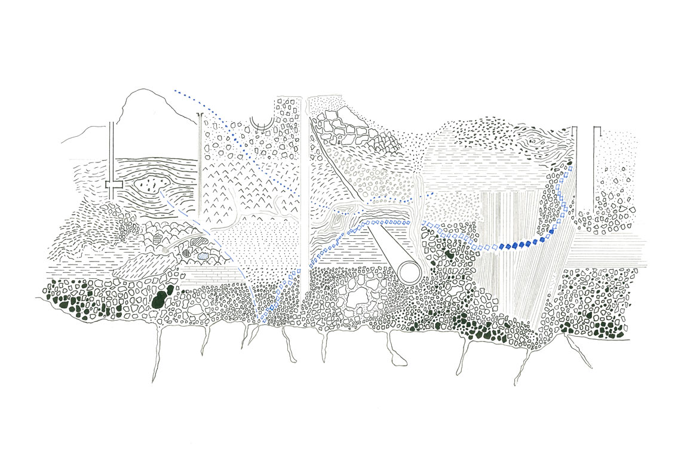
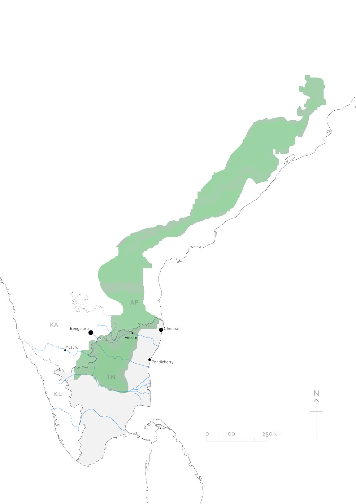
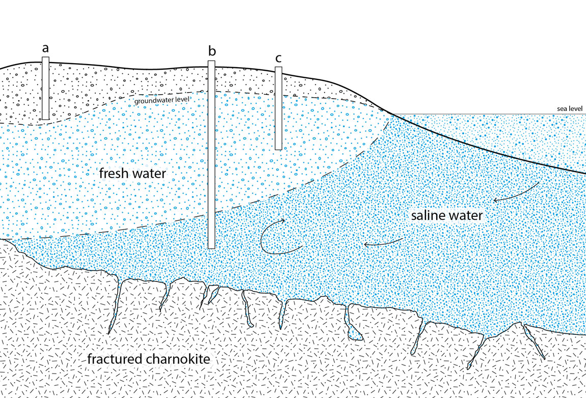
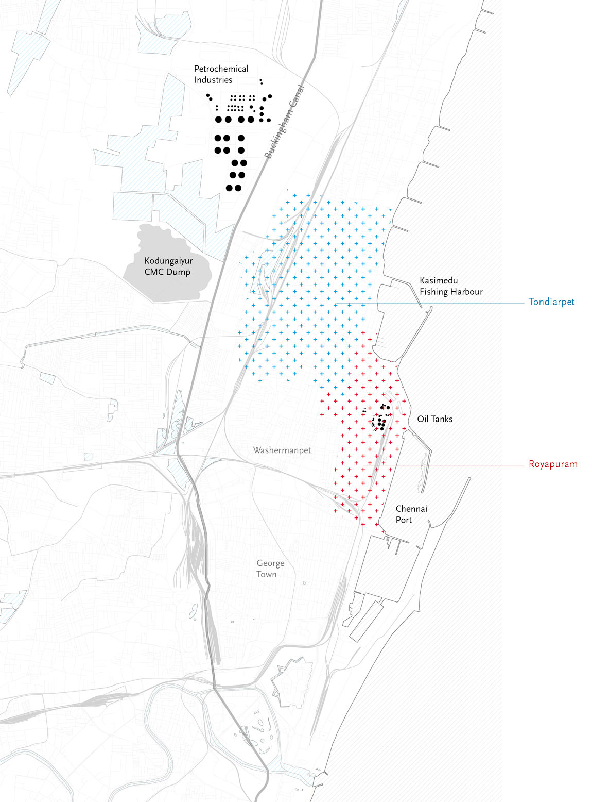
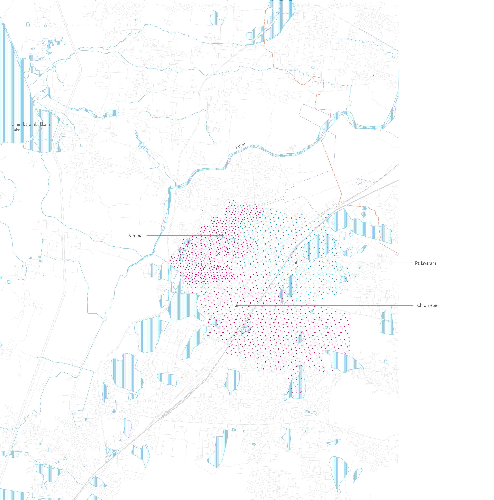

Thinking with groundwater
from Chennai
Groundwater is a persistent material and discursive presence: in its everyday abstraction as a resource, as a stratified zone through which basements and tunnels are built, and as a diverse ecology of minerals and microorganisms modified by seawater intrusion and anthropogenic contaminants.
“What until the end of the millennium politicians left quietly underground, today they pull up as critical for the future of the nation. Subterranean water has risen to prominence as a geopolitical token, an object of national security projects, and an irresistible riddle in planetary science”.1
The Eastern Ghats
The Eastern Ghats is a discontinuous mountain range running parallel with the coast from Odisha in the north of India to the Nilgiri Hills in southern Tamil Nadu. The erratic mountains separate the high plateau of the Indian peninsula from the younger, low-lying coastal regions. The main rivers of Tamil Nadu, the Pallar, Pennai, and Kaveri, flow from the plateau, forming plains of alluvial matter which drop gently towards the Bay of Bengal. This landscape of overlain sediments is a thick, deep, and variegated groundwater medium, often saturated up to very close to the surface. Below these layers of alluvium, active tectonics continue to compress fractured bedrock into ridges and valleys.
Top: Exaggerated topographic view of the Eastern Ghats in relation to Chennai (black) and surrounding coastline. Bottom left: Lake and boulders at Gingee. Right: Map of Tamil Nadu at the Southern extent of the Eastern Ghats range.
Domestic groundwater
Chennai’s water system is multiple and distributed, with only a fraction coming from the municipal piped supply. The role of groundwater as a resource that can be drawn from to meet this shortfall is deeply ingrained in the urban imagination. Groundwater provides a crucial means of storage, safe from evaporation and surface run off, that can be used to slow the outward flow of seasonal rainfall and make it accessible throughout the year. Groundwater abstraction occurs both within domestic plots and on a commercial scale from agricultural areas outside of the city. The reliance upon groundwater for the region’s liveability is reflected in the statewide rainwater harvesting programme to direct rainfall into the ground via percolation structures.
“The pattern has always been that the people of Chennai have not depended much on public water supply: they have depended on their private water supply which is the groundwater source. Any management of water in Chennai has to accept the fact that public water supply need not meet the full requirement: the private resources of the people can meet about 50% of the requirement, and it is good that they do so because then they will take interest to conserve that private water source”.2
Top: Rainwater Harvetsing campaign advertisement painting on a Chennai Metrowater tanker. Middle: Inspecting open wells in a school compound. Bottom: Water towers at Chennai Metrowater compound, Washermanpet.
Top: Coastal groundwater section, after Ballukraya and Ravi 1998, and others. Well ‘a’ draws no water as the water table is too low, well ‘b’ is too deep and draws saline water, well ‘c’ draws fresh water. Bottom: The Rain Centre, Chennai.
Modelling groundwater
Working with groundwater requires working across scales to map and corral a flowing resource, which slowly descends from recharge zones in the upper catchment. Hydrogeologists combine field measurements taken from prototype recharge structures with climatic, topographic and other data in increasingly complex digital models to simulate effects of climate fluctuations and engineered interventions on groundwater levels. At each scale groundwater exceeds the optics through which it viewed and dissolves the physical and conceptual boundaries placed around it
Top: Field sketch section showing piezometers around a percolation pit. Middle: Infiltration tests in a laboratory sand column at Anna University (Haritha and Elango, 2019). Bottom and right: Field testing around a percolation pit, near Ennore, 2018.
“The pattern has always been that the people of Chennai have not depended much on public water supply: they have depended on their private water supply which is the groundwater source. Any management of water in Chennai has to accept the fact that public water supply need not meet the full requirement: the private resources of the people can meet about 50% of the requirement, and it is good that they do so because then they will take interest to conserve that private water source”.2
Tunneling through groundwater
For several years, tunnel boring machines have been worming through the strata directly beneath Chennai’s streets as part of the construction of Chennai Metro Rail. In 2017 a massive sinkhole opened on Anna Salai and further cracks appeared in the road. In total nearly a dozen collapses and eruptions occurred between 2015 and the opening of the first underground sections in 2018. Anxious residents also blamed the tunnelling for reduction in groundwater levels. Such moments of shock destabilise the material and conceptual categories that otherwise condition urban life and the fluid nature of the planet makes itself known.
Top left: CMRL tunnel alignment marker, North Chennai, 2018. Top right: Anna Salai, August 2018. Bottom and right: Under construction, Washermanpet station.
Industrial contamination
The North Chennai neighbourhoods of Royapuram and Tondiarpet are both affected by significant levels of groundwater contamination relating to industrial activity. Petrochemical refineries pushed out of the densifying suburbs towards the edges of the city left their imprint in the form of buried and redundant oil storage tanks and underground pipelines connecting to the storage tanks near Chennai port. Residents describe significant oil deposits in groundwater pumped from domestic wells, and petrochemical companies register leaks via a drop in pressure in their pipelines. The challenges of identifying and mapping these mobile contaminant plumes as they undergo attenuation processes points to the elusive and fleeting nature of groundwater formations.
Tannery waste
Chromepet on Chennai’s southwest fringe is named after the method of tanning leather with chromium sulphate, much of which was released into the groundwater as effluent from tanning drums. Chromium in its most common chemical form is an essential nutrient to humans, but is transformed in groundwater via redox reactions into a form that is highly toxic. A state-mandated effluent treatment plant now reduces the amount of chromium transmitted into groundwater. However, groundwater abstraction still surfaces historic chromium deposited generations ago. Groundwater is dynamic, and transformative, but it is also a slow and sticky and substances remain in it for a very long time.

1A. Ballestero, ‘Aquifers (or, Hydrolithic Elemental Choreographies)’,
Fieldsights, 2019,
2Santha Sheela Nair, former Vice-Chairperson of the Tamil Nadu State
Planning Commission, interviewed by Anthony Powis, 2018, Besant Nagar,
Chennai.
3 Santha Sheela Nair, former Vice-Chairperson of the Tamil Nadu State
Planning Commission, interviewed by Anthony Powis, 2018, Besant Nagar,
Chennai.
Text by Anthony Powis.
Design by Jonathan Cane.
Drawings by Anthony Powis.
Photographs by Anthony Powis and Lindsay Bremner